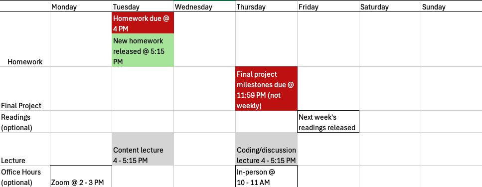

PHS 651: Advanced regression methods
Lecture 0: Introduction
Mary Ryan Baumann, PhD
September 5, 2024
Recording disclosure
This class is being conducted in person, as well as over Zoom. As the instructor, I will be recording this session. I have disabled the recording feature for others so that no one else will be able to record this session. I will be posting this session to the course’s website.
If you have privacy concerns and do not wish to appear in the recording, you may turn video off (click “stop video”) so that Zoom does not record you.
The chat box is always open for discussion and questions to the entire class. You may also send messages privately to the instructor. Please note that Zoom saves all chat transcripts.
Slides found at: https://maryryan.github.io/PHS-651-slides/PHS-651-0/slides-0
Howdy! 🤠
Instructor: Mary Ryan Baumann (she/her)
-
Assistant Professor - Population Health Sciences; Biostatistics & Medical Informatics
Statistician by training; biostatistician by practice
Research in correlated data & study design

Contact
My office: 701 WARF
Email: mary.ryan@wisc.edu
-
Office hours:
In-person: Thursdays 10-11a CT
Zoom: Mondays 2-3p CT
-
Calendly: https://calendly.com/mary-m-ryan/
- For scheduling outside meeting time
Howdy! 🤠
Teaching assistant: Emma Svenson (she/her)
Veterinarian
4th year PhD student, Epidemiology
Contact
Email: svenson@wisc.edu
-
Office hours: scheduled weekly (Doodle poll) & by appointment
Unavailable Sept 15-23
Limited availability Oct 12-23
Course logistics
Instruction times
Tuesdays/Thursdays 4-5:15p CT
Location: 726 WARF
-
Tuesdays will (mostly) be concepts
- Some code to be transparent about illustrative examples
-
Thursdays will (mostly) be application/coding
- Some concept review, but intended to be more hands-on
Attendance
I don’t take it
-
All in-person lectures will also have a synchronous Zoom-in option & will be recorded
Plan A: attend in person
Plan B: attend synchronously on Zoom
Plan C: watch lecture recording on Canvas
Please don’t make me lecture to an empty room
Course logistics
Communications policy 📨
I’ll send an email on Friday evenings with an overview of following week’s activities/topics
-
I’ll be available via email M – F 8a-6p CT
You can expect a response within 24 hours, excluding weekends and holidays
I may be checking my email or reply outside of these hours, but that should not be the expectation
-
I have an open-door policy - drop by any time my door is open to discuss class or not-class topics
- But email/schedule if you want to guarantee time (outside OH)
Course logistics
Canvas site: https://canvas.wisc.edu/courses/426488
-
Where you’ll find basically all documents associated with this course
- Syllabus, assignments, readings, lecture recordings, Zoom link, lecture slides, etc
Lecture slides
PDF copies of lecture slides found on Canvas
-
HTML versions (load in web browser) hosted on Github
-
I use a generic format for the web address:
https://maryryan.github.io/PHS-651-slides/PHS-651-LectureNumber/slides-LectureNumber- Fill in “LectureNumber” with the lecture/week number for the slide deck you want
-
PHS 552 vs 651
What you covered in PHS 552
What is regression
How to build a mean model
Regression models for different types of outcomes (normal, binary, count, etc)
Assumed constant variance, but also looked at what happens when that assumption breaks
Assumed observations are always independent
What we’ll focus on here:
-
Same foundations, different style
- What happens when observations are not independent
Our focus
We’ve previously assumed all observations are independent
Can be a reasonable assumption in certain settings (certain cross-sectional studies)
-
When not reasonable, methods from PHS 552 can still be useful if other tools aren’t available
- We’ll explore the boundaries of this
Here, we’ll be expanding our statistical toolbox
Allows us to be more precise when independence assumption isn’t reasonable
Lets us ask a wider variety of questions
When might independence not be reasonable?
-
Group membership makes in-group outcome variability different from between-group variability
- i.e., health outcomes correlated by neighborhood, occular outcomes correlated by individual
We’re observing the same individuals repeatedly (longitudinal data)
Our focus
We’ve previously assumed all observations are independent
Can be a reasonable assumption in certain settings (certain cross-sectional studies)
-
When not reasonable, methods from PHS 552 can still be useful if other tools aren’t available
- We’ll explore the boundaries of this
Here, we’ll be expanding our statistical toolbox
Allows us to be more precise when independence assumption isn’t reasonable
Lets us ask a wider variety of questions
Non-independence we won’t be getting into
Time series modeling
Spatial statistical modeling
Learning objectives
Upon successful completion of the course, students will be able to:
Extend the knowledge of regression analysis beyond ordinary linear and logistic regression models
Understand the features of correlated data, their role in epidemiologic study, and their implications in drawing inference
State the assumptions underlying linear mixed effect, generalized linear mixed effect, generalized estimating equation, and survival regression models, recognize and address violations of those assumptions, and estimate and interpret regression models to answer epidemiologic and public health research questions in correlated and longitudinal data settings
Implement the inference procedures to solve real-world problems using statistical packages such as SAS and R
Interpret and present the analytic results to answer substantive questions
Course outline
Review of ordinary linear regression, logistic regression weighted least squares
Cross-sectional clustered data
Conditional modeling: linear mixed effect models (LMEs), generalized linear mixed models (GLMMs)
Marginal modeling : generalized estimationg equations (GEEs)
Modeling repeated measures: longitudinal data, multi-period cross-sectional data (panel data)
Multilevel modeling (hopefully)
Time-to-event/survival analysis
What I’m assuming you’re coming in with
Familiarity with basic statistical inference concepts (i.e., estimation, hypothesis testing, confidence intervals)
Basic regression/ANOVA
(Generally) how to build a mean model (i.e., confounding and precision variables)
-
Some familiarity with matrix notation
Should be familiar with matrix addition/subtraction/multiplication/inversion
We’ll review and I’ll post resources
-
Basic SAS/R coding knowledge
I’ll use both in teaching
My primary software is R
You can use whatever software you want for your assignments, just know there are softwares I may be less good at providing support in
How you’ll be evaluated
Small assignments (40%)
Weekly homeworks assigned Tuesdays at end of class, due following Tuesday at beginning of class
Some other small assignments to be completed over several weeks
Midterm (15%)
In-class exam focused on understanding of concepts
-
Scheduled for Th 10/17
- If you have scheduling issues with this date, email me ASAP
Final data analysis project (45%)
Intermediate milestone assignments (10% / 40%)
10-15 minute oral presentation (10% / 40%)
Final written report (25% / 40%)
Textbooks/Readings
There’s no single textbook for this course
I’ll be pulling from several books for different topics
Any time there’s a suggested reading, I’ll put a copy of the corresponding sections in the module
I’ve made the follow full e-books available on the Canvas site:
Foundations of Liner and Generalized Linear Models. 2015. Agresti A. John Wiley & Sons: Hoboken, New Jersey. ISBN: 978-1-118-73030-0
Beyond Multiple Linear Regression: Applied Generalized Linear Models and Multilevel Models in R (online textbook)
Applied Longitudinal Analysis. 2011. Fitzmaurice GM, Laird NM, and Ware JH. John Wiley & Sons: Hoboken, New Jersey. ISBN: 9780470380277
I’ve also scanned several chapters from books I could not find electronic copies of:
Analysis of Longitudinal Data, 2nd edition. 2002. Diggle PJ, Heagerty P, Liang K, and Zeger SL. Oxford University Press: Oxford. ISBN: 9780198524847
Data Analysis Using Regression and Multilevel/Hierarchical Models. 2007. Gelman A and Hill J. Cambridge University Press: New York. ISBN: 9780521686891
Course rhythms
We’ll roughly follow this weekly workflow:
AI policy
Official stance of this course is that I don’t condone the use of AI tools for assignments
Why?
I want to know how you think, not how an LLM thinks
Validity of responses is not guaranteed
Often gives the look of intellectualism without the substance
Training data ethics are debatable
Policy follows the guidelines of most academic journals
I don’t use AI detection software
Mostly because it’s bad
Subpar answers will receive subpar grades, regardless of who/what generated it
Other resources for you
Piazza
This is our main forum for questions
It is my expectation that most questions can (and will) be answered by your fellow students
Peer feedback groups
Randomly assigned groups of 3-4
-
Guarantees everyone with some continuing level of informal brainstorming/feedback through the semester
- Last 20 minutes of Thursday classes will be reserved for this
Also feel free to use as study/question groups
Let’s go!
Review: ordinary linear regression
AKA: ordinary least squares
\[Y_i = \beta_0 + \beta_1 U_i + \epsilon_i\]
\(Y_i\): (continuous) outcome/response/dependent variable for some individual \(i\)
\(U_i\): treatment/exposure/independent variable for individual \(i\)
\(\epsilon_i\): error term
\(\beta_0\): model intercept
-
Interpretation:
- \(\beta_1\): model slope
-
Interpretation:
Review: ordinary linear regression
We can write this in matrix notation: \[\vec{Y} = \boldsymbol{X}\vec{\beta} + \vec{\epsilon},\]
where
\(\vec{Y} = \begin{bmatrix} y_1\\ y_2\\ \vdots\\ y_n \end{bmatrix}\) is a (\(n\) x \(1\)) vector of responses
\(\boldsymbol{X} = \begin{bmatrix} 1 & u_1\\ 1 & u_2\\ \vdots & \vdots\\ 1 & u_n \end{bmatrix}\) is the (\(n\) x \(2\)) design matrix
\(\vec{\beta} = \begin{bmatrix} \beta_0\\ \beta_1 \end{bmatrix}\) is a (\(2\) x \(1\)) vector of coefficients
\(\vec{\epsilon} =\begin{bmatrix} \epsilon_1\\ \epsilon_2\\ \vdots\\ \epsilon_n \end{bmatrix}\) a (\(n\) x \(1\)) vector of residuals
Review: ordinary linear regression
We can write this in matrix notation: \[\vec{Y} = \boldsymbol{X}\vec{\beta} + \vec{\epsilon},\]
- \(\boldsymbol{X} = \begin{bmatrix} 1 & u_1\\ 1 & u_2\\ \vdots & \vdots\\ 1 & u_n \end{bmatrix}\) is the design matrix
- \(\vec{\beta} = \begin{bmatrix} \beta_0\\ \beta_1 \end{bmatrix}\) is a vector of coefficients
\(\boldsymbol{X}\vec{\beta}\) is an example of matrix multiplication
- Results in a \(n\)-row by 1 column vector
\[\begin{bmatrix} 1\beta_0 + u_1\beta_1\\ 1\beta_0 + u_2\beta_1\\ \vdots\\ 1\beta_0 + u_n\beta_1 \end{bmatrix}\]
Review: ordinary linear regression
We can write this in matrix notation: \[\vec{Y} = \boldsymbol{X}\vec{\beta} + \vec{\epsilon},\]
\(\boldsymbol{X}\vec{\beta} + \vec{\epsilon}\) is an example of matrix addition
- Results in a \(n\)-row by 1 column vector
\[\begin{bmatrix} (1\beta_0 + u_1\beta_1) + \epsilon_1\\ (1\beta_0 + u_2\beta_1) + \epsilon_2\\ \vdots\\ (1\beta_0 + u_n\beta_1) + \epsilon_n \end{bmatrix}\]
\(\vec{Y}\) and \(\boldsymbol{X}\) are data, while \(\vec{\beta}\) and \(\vec{\epsilon}\) are model parameters
Review: ordinary linear regression
\[\vec{Y} = \boldsymbol{X}\vec{\beta} + \vec{\epsilon}\] We like to think of splitting our model into 2 parts:
- the mean model \[E[\vec{Y}|\boldsymbol{X}] = \boldsymbol{X}\vec{\beta}\]
- and the model of the covariance \[Cov[\vec{Y}|\boldsymbol{X}] = \boldsymbol{\Sigma}\]
-
In OLS we usually assume these errors are:
Normally distributed \(\vec{\epsilon} \sim N(0, \sigma^2)\)
Have a constant variance across all observations (homoskedasticity assumption)
And that observations are completely independent (covariance of 0)
So \(\boldsymbol{\Sigma}\) ends up being assumed to look like:
\[\boldsymbol{\Sigma} = \begin{bmatrix}\sigma^2 & 0 & \dots & 0 \\ 0 & \ddots & \dots & 0 \\ \vdots & \dots & \ddots & \vdots\\ 0 & \dots & 0 & \sigma^2\end{bmatrix}\]
Review: OLS estimation
Model parameters are the “true” relationship between our independent variables and our response (given how we’re modeling the relationship…)
- We try to estimate what that particular relationship might be using data
We can get a point estimate for \(\beta\) using the data: \[\widehat{\boldsymbol{\beta}} = (\boldsymbol{X}^T\boldsymbol{X})^{-1}\boldsymbol{X}^T\vec{Y}\]
- This is our single best guess for what \(\beta\) is 🎯
\(\boldsymbol{X}^T\) is an example of transposing a matrix
It turns a \(n\) x 2 matrix \[\boldsymbol{X} = \begin{bmatrix} 1 & u_1\\ 1 & u_2\\ \vdots & \vdots\\ 1 & u_n \end{bmatrix}\]
into a 2 x \(n\) matrix \[\boldsymbol{X}^T = \begin{bmatrix} 1 & 1 & \dots & 1\\ u_n & u_2 & \dots & u_n \end{bmatrix}\]
Review: OLS estimation
Model parameters are the “true” relationship between our independent variables and our response (given how we’re modeling the relationship…)
- We try to estimate what that particular relationship might be using data
We can get a point estimate for \(\beta\) using the data: \[\widehat{\boldsymbol{\beta}} = (\boldsymbol{X}^T\boldsymbol{X})^{-1}\boldsymbol{X}^T\vec{Y}\]
- This is our single best guess for what \(\beta\) is 🎯
\((\boldsymbol{X}^T\boldsymbol{X})^{-1}\) is an example of matrix inversion
- Think of it like you’re dividing \(\boldsymbol{X}^T\vec{Y}\) by \((\boldsymbol{X}^T\boldsymbol{X})\): \(\frac{\boldsymbol{X}^T\vec{Y}}{(\boldsymbol{X}^T\boldsymbol{X})}\)
Review: OLS inference
Because our data is only a sample from the entire population of interest, we always have uncertainty in that estimate… We need to incorporate varaince of our parameter to quantify that uncertainty
- The covariance matrix for \(\beta\) is \[V = \sigma^2(\boldsymbol{X}^T\boldsymbol{X})^{-1}\]
which we estimate with \[\widehat{V} = \widehat{\sigma}^2(\boldsymbol{X}^T\boldsymbol{X})^{-1}\]
- We assume our estimate \(\widehat{\beta}\) has a distribution: \[\widehat{\beta} \sim N(\beta, V)\]
- Then we can create a \((100-\alpha/2)\)% confidence interval for \(\widehat{\beta}\): \[\widehat{\beta} \pm Z_{1-\alpha/2}\sqrt{\widehat{V}}\]
-
We call this statistical inference
It’s a way of providing context for our point estimate
If a confidence interval is wide it tells us there’s a lot of variation around our point estimate
if a confidence interval is narrow it tells us our there’s little variation around our point estimate
Review: weighted least squares
What happens when \(Var[\vec{Y}|\boldsymbol{X}]\) is NOT the same across all observations? What if it varies by \(u_i\)?
- Estimate of \(\beta\) will be fine, but inference will be incorrect
We can fixed this with weighted least squares (WLS)
\[\widehat{\boldsymbol{\beta}} = (\boldsymbol{X}^T\boldsymbol{W}\boldsymbol{X})^{-1}\boldsymbol{X}^T\boldsymbol{W}\vec{Y}\]
- \(\boldsymbol{W}\) is a diagonal matrix of weights
\[\begin{bmatrix} w_1 & 0 & \dots & 0\\ 0 & w_2 & \dots & 0\\ \vdots& &\ddots &\vdots\\ 0 & 0 & \dots & w_n\\ \end{bmatrix}\]
Review: weighted least squares
What happens when \(Var[\vec{Y}|\boldsymbol{X}]\) is NOT the same across all of \(\vec{Y}\)?
- Estimate of \(\beta\) will be fine, but inference will be incorrect
We can fixed this with weighted least squares (WLS)
\[\widehat{\boldsymbol{\beta}} = (\boldsymbol{X}^T\boldsymbol{W}\boldsymbol{X})^{-1}\boldsymbol{X}^T\boldsymbol{W}\vec{Y}\]
- Assumes variance of the outcomes is
\[Var[\vec{Y}|\boldsymbol{X}] = \sigma^2\boldsymbol{W}^{-1}\]
- Which gives us an estimated variance for \(\widehat{\beta}\) of
\[\widehat{V} = \widehat{\sigma}^2(\boldsymbol{X}^T\boldsymbol{W}\boldsymbol{X})^{-1}\]
Review: robust variance
WLS can help if our assumptions are correct, but what if \(Var[\vec{Y}|\boldsymbol{X}] \ne \sigma^2\boldsymbol{W}^{-1}\)?
-
Then true variance of \(\widehat{\beta}\) is \[(\boldsymbol{X}^T\boldsymbol{W}\boldsymbol{X})^{-1}(\boldsymbol{X}^T\boldsymbol{W}\boldsymbol{\Sigma}\boldsymbol{W}\boldsymbol{X})(\boldsymbol{X}^T\boldsymbol{W}\boldsymbol{X})^{-1}\]
- \(\boldsymbol{\Sigma}\) is the true variance of \(\vec{Y}\)
- We call this a robust variance estimate
-
If the WLS variance is correct (\(\boldsymbol{V} = \sigma^2\boldsymbol{W}^{-1}\)) then this simplifies back to \(\sigma^2(\boldsymbol{X}^T\boldsymbol{W}\boldsymbol{X})^{-1}\)
That’s why we call it “robust” – it doesn’t penalize us if our assumptions about \(\boldsymbol{W}\) are correct, but helps fix it if they’re wrong
Also known as sandwich variance because it looks a bit like meat (\(\boldsymbol{X}^T\boldsymbol{W}\boldsymbol{\Sigma}\boldsymbol{W}\boldsymbol{X}\)) between 2 slices of bread (\(\boldsymbol{X}^T\boldsymbol{W}\boldsymbol{X}\))
We can estimate each element of \(\boldsymbol{\Sigma}\) with the squared residual of our model: \(e_i^2 = (Y_i - \hat{Y}_i)^2\)
-
In 552, we assumed \(\boldsymbol{\Sigma}\) was a diagonal matrix (because assume 0 covariance)
- We’ll break that assumption in this class
Review: robust variance
WLS can help if our assumptions are correct, but what if \(Var[\vec{Y}|\boldsymbol{X}] \ne \sigma^2\boldsymbol{W}^{-1}\)?
-
Then true variance of \(\widehat{\beta}\) is \[(\boldsymbol{X}^T\boldsymbol{W}\boldsymbol{X})^{-1}(\boldsymbol{X}^T\boldsymbol{W}\boldsymbol{\Sigma}\boldsymbol{W}\boldsymbol{X})(\boldsymbol{X}^T\boldsymbol{W}\boldsymbol{X})^{-1}\]
- \(\boldsymbol{\Sigma}\) is the true variance of \(\vec{Y}\)
- We call this a robust variance estimate
Robust variance is known as a post hoc correction because it only affects inference of \(\widehat{\beta}\), not how we construct the mean model
- Note that if \(\boldsymbol{W} = \boldsymbol{1}\), then we’re just applying the robust variance correction to OLS!
Review: logistic regression
Now what happens if \(\vec{Y}\) is binary?
-
We could still try to model \(\vec{Y}\) with \[E[\vec{Y}|\boldsymbol{X}] = \boldsymbol{X}\vec{\beta}\] and use WLS to deal with non-constant variance (since \(Var[\vec{Y}|\boldsymbol{X}] = E[\vec{Y}|\boldsymbol{X}]\left(1 - E[\vec{Y}|\boldsymbol{X}]\right)\))
- What do the interpretations of \(\beta_0\) and \(\beta_1\) then become?
But this gets squirrel-y as your probability of an “event” drifts toward 0 or 1
Review: logistic regression
Now what happens if \(\vec{Y}\) is binary?
An alternative model is logistic regression
\[\log\left(\frac{E[\vec{Y}|\boldsymbol{X}]}{1-E[\vec{Y}|\boldsymbol{X}]}\right) = \boldsymbol{X}\vec{\beta}\]
-
Interpretation of \(e^{\beta_1}\): the relative difference in the odds of ‘success’ comparing two populations differing by 1 unit in \(\boldsymbol{X}\)
- The above regression is modeling the odds ratio
-
We call the function \(\log\left(\frac{x}{1-x}\right)\) the logit
That makes this type of regression a logistic regression
In PHS 552, you derived why we use that transformation based on the binomial likelihood
We’ll dig into logistic regression more in a few classes
Review: Poisson regression
Now what happens if \(\vec{Y}\) is a count of something?
We model \(Y_i\) a Poisson random variable with mean \(\lambda_i T_i\)
\(\lambda_i\) is the rate of events per unit of time
\(T_i\) is the interval of observation
We don’t like modeling this via OLS because count/Poisson variables break the constant variance assumption
An alternate model is the d a log-linear regression model \[\log\left(\lambda(\vec{x}_i)\right) = \vec{X}_i\vec{\beta}\] where we assume that \(\lambda_i\) depends on the covariate(s) through the log link function
- In practice, the linear predictor is usually specified in terms of the mean events per observed time \(\lambda(u_i) T_i\) rather than the rate \(\lambda_i\)
\[\log(\mu_i)=\log\left(\lambda(u_i)\right) + \log(T_i) = \vec{X}_i\vec{\beta} + \log(T_i)\]
- This makes \(\log(T_i)\) an offset, a predictor variable (covariate) with a known coefficient (\(\beta\)) of 1
Review: Poisson vs negative binomial regression
An issue with Poisson regression is that it assumes \(Var[Y_i|\vec{X}_i] = E[Y_i|\vec{X}_i] = \mu_i\)
-
In our data, we usually end up finding \(Var[Y_i|\vec{X}_i] > E[Y_i|\vec{X}_i]\)
- This causes overdispersion
One way to combat this is by assuming our count outcome \(\vec{Y}\) actually follows a negative binomial distribution that allows \(Var[Y_i|\vec{X}_i] > E[Y_i|\vec{X}_i]\)
-
We still use a log transformation on the outcome, so the model is written the same as before – the difference is on the variance
- As the mean number of events in observed time:
\[\log(\mu_i)=\log\left(\lambda(u_i)\right) + \log(T_i) = \vec{X}_i\vec{\beta} + \log(T_i)\]
- Or as the rate of events given a standard length of time:
\[\log\left(\lambda(\vec{x}_i)\right) = \vec{X}_i\vec{\beta}\]